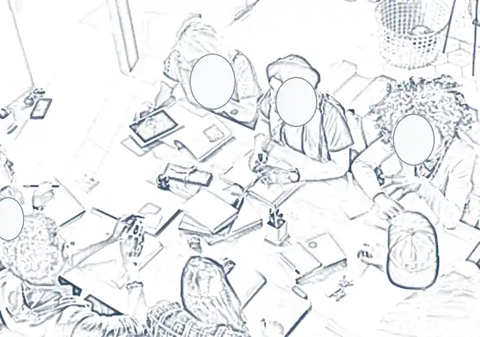

Réglementaire et prudentiel
Stress tests, indicateurs prudentiels, échanges avec l'AMF et le FGDR.
Risk management et environnement titres
Actuaire Risk Management chez GRESHAM Banque, après cinq ans de gestion de projets risques et gouvernance à la Société Générale. Je fais le lien entre les exigences réglementaires et la réalité opérationnelle des processus titres.

Mon terrain, c'est l'endroit où la réglementation rencontre les opérations : cadrer un sujet prudentiel, le traduire en processus concrets, puis le faire vivre dans les outils du quotidien.
Je m'oriente aujourd'hui vers des missions de chef de projet risques sur l'environnement titres : cadrage réglementaire, digitalisation des processus et migration de systèmes.
Stress tests, indicateurs prudentiels, échanges avec l'AMF et le FGDR.
Appui au Back Office et maîtrise des processus de la chaîne titres.
Gouvernance, cadrage, coordination des parties prenantes et conduite du changement.
GRESHAM Banque
Société Générale
Spécialité Économie et Gestion des Risques Financiers. Validé avec stage et mémoire professionnel.
Financial Modeling & Valuation Analyst, Corporate Finance Institute.
Capital Markets & Securities Analyst, Corporate Finance Institute.
Un projet de cadrage réglementaire, de digitalisation ou de migration sur l'environnement titres ? Écrivez-moi.